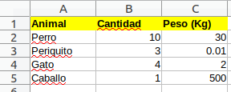

# se asigna 10 a la variable a
a <- 10
# se asigna 2 a la variable b
b = 2
# se asigna texto a la variable c
"texto variable" -> cIntroducción a R
R es un lenguaje de programación orientado a la estadística.
Algo parecido a SPSS o Matlab.
Es código abierto y se entrega bajo licencia GPL (versión 2 o posterior). Además existen multitud de paquetes que complementan su funcionalidad.
Asignaciones
Podemos usar <- o el símbolo = para asignar un valor a una variable
# para ver las variables
print(a)[1] 10# concatenar texto a una variable
# concatena vectores despues de convertirlo a caracteres
paste("El valor de a es:",a)[1] "El valor de a es: 10"paste("El vector a es: ", a, "hola", sep ='---')[1] "El vector a es: ---10---hola"Operaciones
Operaciones matemáticas
b + a #Suma[1] 12b * a #Multiplicación[1] 20b - a #Resta[1] -8b / a #División: [1] 0.2a %/% b #División entera: [1] 5a %% b #Módulo o resto de la división: [1] 0a ^ b #Potencia: [1] 100Otro tipo de operador
3:10 #Secuencias[1] 3 4 5 6 7 8 9 106 %in% 3:10 #contiene[1] TRUEmy_sec <- 7:27Funciones básicas
Las funciones * siempre acaban en () * pueden recibir un número variable de parámetros * pueden existir parámetros por defecto
Ver las variables en memoria:
# lista las variables que se encuentren en memoria
ls()[1] "a" "b" "c" "my_sec"Ver el tipo de variable:
typeof(a)[1] "double"Para concatenar textos usamos paste(a, b, c, …)
paste("El valor de a es ",a)[1] "El valor de a es 10"Tipos de datos
Numérico
# ver el tipo de variable
a <- 20
typeof(a)[1] "double"# convertir a entero
b <- as.integer(a)
typeof(b)[1] "integer"c <- as.character(b)
typeof(c)[1] "character"d <- T
typeof(d)[1] "logical"Texto
s1 <- " Discovery"
# ver el contenido de la variable
s1[1] " Discovery"# tipo de la variable
typeof(s1)[1] "character"Logical
b1 <- TRUE
b2 <- T
b3 <- FALSE
b4 <- F
paste("El valor de b1 es",b1)[1] "El valor de b1 es TRUE"paste("El valor de b2 es",b2)[1] "El valor de b2 es TRUE"paste("El valor de b3 es",b3)[1] "El valor de b3 es FALSE"paste("El valor de b3 es",b4)[1] "El valor de b3 es FALSE"Vectores
Los vectores se crean con la función c(), todos los elementos de un vector son del mismo tipo. Es decir, no se podrían mezclar caracteres y double.
En Python se llaman listas:
a = [1,2,3,40]En Java arrays:
int[] a={1,2,3,40};En R son vectores: Función que combina valores
a = c(1,2,3,40)# combina todos los valores y los devuelve en un objeto tipo vector
alturas<-c(1.80,1.60,1.50,1.90,1.75,1.63,1.65)
print(paste("alturas es una variable de tipo:",typeof(alturas)))[1] "alturas es una variable de tipo: double"alturas[1] 1.80 1.60 1.50 1.90 1.75 1.63 1.65Obtener más información de la estructura de una variable
str(alturas) num [1:7] 1.8 1.6 1.5 1.9 1.75 1.63 1.65# vector tipo texto
myTxt <- c("rojo","verde","azul")
myTxt[1] "rojo" "verde" "azul" str(myTxt) chr [1:3] "rojo" "verde" "azul"Acceso a elementos:
# en R los vectores inician en 1
print(paste("El valor del tercer elemento es:",alturas[3]))[1] "El valor del tercer elemento es: 1.5"# longitud del numero de elementos
length(alturas)[1] 7# ultimo elemento del vector
alturas[length(alturas)][1] 1.65# ver varios elementos de un vector, la c, genera un vector
alturas[c(1, 2, 3)][1] 1.8 1.6 1.5# separar elementos con una coma se debe hacer por medio de colapse
paste(alturas[c(1, 2, 3)], collapse = ', ')[1] "1.8, 1.6, 1.5"# mostrar texto más el vector separado por comas
paste("Alturas del 1 al 3: ", paste(alturas[c(1, 2, 3)], collapse = ', '))[1] "Alturas del 1 al 3: 1.8, 1.6, 1.5"# almacenar las tres alturas en una variable
las_3_alturas <- paste(alturas[c(1, 2, 3)], collapse = ', ')
# mostrar texto más el vector separado por comas
paste("Alturas del 1 al 3: ", las_3_alturas)[1] "Alturas del 1 al 3: 1.8, 1.6, 1.5"¡¡En R los vectores empiezan en 1!!
Data Frame
Un Dataframe es una tabla como la que podemos encontrar en cualquier hoja de calculo.

La información se estructura en columnas, cada columna puede ser de un tipo de variable diferente: categorica, numerica, fecha, etc..
Cada fila representa un elemento u objeto cuyos atributos están representados por las columnas.
#Generar un dataframe
df <- data.frame(Animal=c('Perro', 'Periquito', 'Gato', 'Caballo'),
Cantidad=c(10,3,4,1),
Peso=c(30, 0.01, 2, 500))# igual que los vectores, tienen un indice de acceso
df Animal Cantidad Peso
1 Perro 10 3e+01
2 Periquito 3 1e-02
3 Gato 4 2e+00
4 Caballo 1 5e+02Podemos acceder a por filas y columnas:
# Acceder a la primera fila (filas coma columna)
df[1,] Animal Cantidad Peso
1 Perro 10 30# Acceder a la segunda columna (filas coma columna)
df[,2][1] 10 3 4 1# Acceder por nombre
df$Cantidad[1] 10 3 4 1# Acceder por nombre
df[,'Cantidad'][1] 10 3 4 1# Acceder por nombre en forma de columna
df['Cantidad'] Cantidad
1 10
2 3
3 4
4 1# Podemos buscar aquellos que pesan más de 20kg
df[df$Peso>20,] Animal Cantidad Peso
1 Perro 10 30
4 Caballo 1 500# simplemente se hace la pregunta df$Peso>20
df$Peso>20[1] TRUE FALSE FALSE TRUE# Le digo, devuelveme el primero y el cuarto
df[c(TRUE, FALSE, FALSE, TRUE),] Animal Cantidad Peso
1 Perro 10 30
4 Caballo 1 500# Le digo, devuelveme el primero y el cuarto otra manera
df[c(1,3),] Animal Cantidad Peso
1 Perro 10 30
3 Gato 4 2# Podemos buscar aquellos que pesan más de 20kg
df[df[,'Peso'] > 20,] Animal Cantidad Peso
1 Perro 10 30
4 Caballo 1 500# filtrar y combinar columnas
paste('Los animales que pesan más de 20kg son:', paste(df[df$Peso>20,'Animal'], collapse=','))[1] "Los animales que pesan más de 20kg son: Perro,Caballo"# Devuelve un df con los datos
df[df$Peso>20,] Animal Cantidad Peso
1 Perro 10 30
4 Caballo 1 500# Devuelve los animales de la consulta
df[df$Peso>20, "Animal"][1] "Perro" "Caballo"# de otra manera
df[df$Peso>20,]$Animal[1] "Perro" "Caballo"# Devuelve los animales de la consulta
paste(df[df$Peso>20, "Animal"], collapse=' - ')[1] "Perro - Caballo"También podemos utilizar la función which() por dos motivos: * Tiene en cuenta los NA * Es ligeramente más rápido
# esto me dice en cual hay true, en el 1 y el 4
which(df$Peso>20)[1] 1 4# Maneja datos más rapidamente
df[which(df$Peso>20),] Animal Cantidad Peso
1 Perro 10 30
4 Caballo 1 500df[c(1,4),] Animal Cantidad Peso
1 Perro 10 30
4 Caballo 1 500Ejemplo: Actividad deportiva
activities<-read.csv('data/activities_strava.csv', stringsAsFactor=T)
head(activities) Activity.ID Activity.Date Activity.Name Activity.Type
1 2583296920 Aug 1, 2019, 3:51:15 PM Afternoon Ride Ride
2 2583296929 Aug 2, 2019, 5:53:50 AM Morning Ride Ride
3 2584111125 Aug 2, 2019, 1:15:49 PM Afternoon Ride Ride
4 2613027582 Aug 12, 2019, 3:58:59 PM Afternoon Ride Ride
5 2631611632 Aug 19, 2019, 5:24:35 AM Morning Ride Ride
6 2632473031 Aug 19, 2019, 1:29:48 PM Afternoon Ride Ride
Activity.Description Elapsed.Time Distance Relative.Effort Commute
1 NA 50436 8.14 NA false
2 NA 1745 7.96 NA false
3 NA 944 6.97 NA false
4 NA 4170 10.52 NA false
5 NA 1744 7.62 NA true
6 NA 1046 7.62 NA true
Activity.Gear Filename Athlete.Weight Bike.Weight
1 NA activities/2583296920.gpx 0 NA
2 NA activities/2583296929.gpx 0 NA
3 NA activities/2584111125.gpx 0 NA
4 NA activities/2613027582.gpx 0 NA
5 NA activities/2631611632.gpx 0 NA
6 NA activities/2632473031.gpx 0 NA
Elapsed.Time.1 Moving.Time Distance.1 Max.Speed Average.Speed Elevation.Gain
1 50436 38641 8143.7 14.2 NA 29.82933
2 1745 1682 7960.3 13.8 NA 128.79434
3 944 944 6969.6 14.9 NA 17.21061
4 4170 3003 10528.8 11.8 NA 62.29892
5 1744 1611 7628.7 12.0 NA 128.79936
6 1046 1038 7620.3 13.9 NA 30.42585
Elevation.Loss Elevation.Low Elevation.High Max.Grade Average.Grade
1 NA 605.7 704.5 21.7 -1.03392804
2 NA 584.3 704.5 13.0 1.18462873
3 NA 584.3 704.5 10.5 -1.59837008
4 NA 765.5 794.6 7.2 -0.02944305
5 NA 584.3 704.5 12.9 1.33181274
6 NA 584.3 704.5 10.1 -1.30965972
Average.Positive.Grade Average.Negative.Grade Max.Cadence Average.Cadence
1 NA NA NA NA
2 NA NA NA NA
3 NA NA NA NA
4 NA NA NA NA
5 NA NA NA NA
6 NA NA NA NA
Max.Heart.Rate Average.Heart.Rate Max.Watts Average.Watts Calories
1 NA NA NA NA NA
2 NA NA NA NA NA
3 NA NA NA NA NA
4 NA NA NA NA NA
5 NA NA NA NA NA
6 NA NA NA NA NA
Max.Temperature Average.Temperature Relative.Effort.1 Total.Work
1 NA NA NA NA
2 NA NA NA NA
3 NA NA NA NA
4 NA NA NA NA
5 NA NA NA NA
6 NA NA NA NA
Number.of.Runs Uphill.Time Downhill.Time Other.Time Perceived.Exertion
1 NA NA NA NA NA
2 NA NA NA NA NA
3 NA NA NA NA NA
4 NA NA NA NA NA
5 NA NA NA NA NA
6 NA NA NA NA NA
translation.missing..en.US.lib.export.portability_exporter.activities.horton_values.type
1 NA
2 NA
3 NA
4 NA
5 NA
6 NA
translation.missing..en.US.lib.export.portability_exporter.activities.horton_values.start_time
1 NA
2 NA
3 NA
4 NA
5 NA
6 NA
Weighted.Average.Power Power.Count Prefer.Perceived.Exertion
1 NA NA NA
2 NA NA NA
3 NA NA NA
4 NA NA NA
5 NA NA NA
6 NA NA NA
Perceived.Relative.Effort Commute.1 Total.Weight.Lifted From.Upload
1 NA NA NA NA
2 NA NA NA NA
3 NA NA NA NA
4 NA NA NA NA
5 NA NA NA NA
6 NA NA NA NA
Grade.Adjusted.Distance Weather.Observation.Time Weather.Condition
1 NA NA NA
2 NA NA NA
3 NA NA NA
4 NA NA NA
5 NA NA NA
6 NA NA NA
Weather.Temperature Apparent.Temperature Dewpoint Humidity Weather.Pressure
1 NA NA NA NA NA
2 NA NA NA NA NA
3 NA NA NA NA NA
4 NA NA NA NA NA
5 NA NA NA NA NA
6 NA NA NA NA NA
Wind.Speed Wind.Gust Wind.Bearing Precipitation.Intensity Sunrise.Time
1 NA NA NA NA NA
2 NA NA NA NA NA
3 NA NA NA NA NA
4 NA NA NA NA NA
5 NA NA NA NA NA
6 NA NA NA NA NA
Sunset.Time Moon.Phase Bike Gear Precipitation.Probability Precipitation.Type
1 NA NA NA NA NA NA
2 NA NA NA NA NA NA
3 NA NA NA NA NA NA
4 NA NA NA NA NA NA
5 NA NA NA NA NA NA
6 NA NA NA NA NA NA
Cloud.Cover Weather.Visibility UV.Index Weather.Ozone
1 NA NA NA NA
2 NA NA NA NA
3 NA NA NA NA
4 NA NA NA NA
5 NA NA NA NA
6 NA NA NA NA
translation.missing..en.US.lib.export.portability_exporter.activities.horton_values.jump_count
1 NA
2 NA
3 NA
4 NA
5 NA
6 NA
translation.missing..en.US.lib.export.portability_exporter.activities.horton_values.total_grit
1 NA
2 NA
3 NA
4 NA
5 NA
6 NA
translation.missing..en.US.lib.export.portability_exporter.activities.horton_values.avg_flow
1 NA
2 NA
3 NA
4 NA
5 NA
6 NApara saber el tamaño del fichero
object.size(activities)68776 bytespara saber la cantidad de filas
nrow(activities)[1] 95podemos ver su estructura
str(activities)'data.frame': 95 obs. of 77 variables:
$ Activity.ID : num 2.58e+09 2.58e+09 2.58e+09 2.61e+09 2.63e+09 ...
$ Activity.Date : Factor w/ 95 levels "Aug 1, 2019, 3:51:15 PM",..: 1 6 5 2 4 3 7 9 8 11 ...
$ Activity.Name : Factor w/ 8 levels "Afternoon Hike",..: 2 6 2 2 6 2 2 6 2 6 ...
$ Activity.Type : Factor w/ 4 levels "Hike","Ride",..: 2 2 2 2 2 2 2 2 2 2 ...
$ Activity.Description : logi NA NA NA NA NA NA ...
$ Elapsed.Time : int 50436 1745 944 4170 1744 1046 508 1825 1198 2365 ...
$ Distance : num 8.14 7.96 6.97 10.52 7.62 ...
$ Relative.Effort : logi NA NA NA NA NA NA ...
$ Commute : Factor w/ 2 levels "false","true": 1 1 1 1 2 2 1 2 2 1 ...
$ Activity.Gear : logi NA NA NA NA NA NA ...
$ Filename : Factor w/ 95 levels "activities/2583296920.gpx",..: 1 2 3 4 5 6 7 8 9 10 ...
$ Athlete.Weight : num 0 0 0 0 0 0 0 0 0 0 ...
$ Bike.Weight : logi NA NA NA NA NA NA ...
$ Elapsed.Time.1 : num 50436 1745 944 4170 1744 ...
$ Moving.Time : num 38641 1682 944 3003 1611 ...
$ Distance.1 : num 8144 7960 6970 10529 7629 ...
$ Max.Speed : num 14.2 13.8 14.9 11.8 12 ...
$ Average.Speed : num NA NA NA NA NA NA NA NA NA NA ...
$ Elevation.Gain : num 29.8 128.8 17.2 62.3 128.8 ...
$ Elevation.Loss : num NA NA NA NA NA NA NA NA NA NA ...
$ Elevation.Low : num 606 584 584 766 584 ...
$ Elevation.High : num 704 704 704 795 704 ...
$ Max.Grade : num 21.7 13 10.5 7.2 12.9 ...
$ Average.Grade : num -1.0339 1.1846 -1.5984 -0.0294 1.3318 ...
$ Average.Positive.Grade : logi NA NA NA NA NA NA ...
$ Average.Negative.Grade : logi NA NA NA NA NA NA ...
$ Max.Cadence : logi NA NA NA NA NA NA ...
$ Average.Cadence : num NA NA NA NA NA NA NA NA NA NA ...
$ Max.Heart.Rate : logi NA NA NA NA NA NA ...
$ Average.Heart.Rate : logi NA NA NA NA NA NA ...
$ Max.Watts : logi NA NA NA NA NA NA ...
$ Average.Watts : logi NA NA NA NA NA NA ...
$ Calories : num NA NA NA NA NA NA NA NA NA NA ...
$ Max.Temperature : logi NA NA NA NA NA NA ...
$ Average.Temperature : num NA NA NA NA NA NA NA NA NA NA ...
$ Relative.Effort.1 : logi NA NA NA NA NA NA ...
$ Total.Work : logi NA NA NA NA NA NA ...
$ Number.of.Runs : logi NA NA NA NA NA NA ...
$ Uphill.Time : logi NA NA NA NA NA NA ...
$ Downhill.Time : logi NA NA NA NA NA NA ...
$ Other.Time : logi NA NA NA NA NA NA ...
$ Perceived.Exertion : num NA NA NA NA NA NA NA NA NA NA ...
$ translation.missing..en.US.lib.export.portability_exporter.activities.horton_values.type : logi NA NA NA NA NA NA ...
$ translation.missing..en.US.lib.export.portability_exporter.activities.horton_values.start_time: logi NA NA NA NA NA NA ...
$ Weighted.Average.Power : logi NA NA NA NA NA NA ...
$ Power.Count : logi NA NA NA NA NA NA ...
$ Prefer.Perceived.Exertion : num NA NA NA NA NA NA NA NA NA NA ...
$ Perceived.Relative.Effort : num NA NA NA NA NA NA NA NA NA NA ...
$ Commute.1 : num NA NA NA NA NA NA NA NA NA NA ...
$ Total.Weight.Lifted : logi NA NA NA NA NA NA ...
$ From.Upload : num NA NA NA NA NA NA NA NA NA NA ...
$ Grade.Adjusted.Distance : logi NA NA NA NA NA NA ...
$ Weather.Observation.Time : logi NA NA NA NA NA NA ...
$ Weather.Condition : logi NA NA NA NA NA NA ...
$ Weather.Temperature : logi NA NA NA NA NA NA ...
$ Apparent.Temperature : logi NA NA NA NA NA NA ...
$ Dewpoint : logi NA NA NA NA NA NA ...
$ Humidity : logi NA NA NA NA NA NA ...
$ Weather.Pressure : logi NA NA NA NA NA NA ...
$ Wind.Speed : logi NA NA NA NA NA NA ...
$ Wind.Gust : logi NA NA NA NA NA NA ...
$ Wind.Bearing : logi NA NA NA NA NA NA ...
$ Precipitation.Intensity : logi NA NA NA NA NA NA ...
$ Sunrise.Time : logi NA NA NA NA NA NA ...
$ Sunset.Time : logi NA NA NA NA NA NA ...
$ Moon.Phase : logi NA NA NA NA NA NA ...
$ Bike : logi NA NA NA NA NA NA ...
$ Gear : logi NA NA NA NA NA NA ...
$ Precipitation.Probability : logi NA NA NA NA NA NA ...
$ Precipitation.Type : logi NA NA NA NA NA NA ...
$ Cloud.Cover : logi NA NA NA NA NA NA ...
$ Weather.Visibility : logi NA NA NA NA NA NA ...
$ UV.Index : logi NA NA NA NA NA NA ...
$ Weather.Ozone : logi NA NA NA NA NA NA ...
$ translation.missing..en.US.lib.export.portability_exporter.activities.horton_values.jump_count: logi NA NA NA NA NA NA ...
$ translation.missing..en.US.lib.export.portability_exporter.activities.horton_values.total_grit: logi NA NA NA NA NA NA ...
$ translation.missing..en.US.lib.export.portability_exporter.activities.horton_values.avg_flow : logi NA NA NA NA NA NA ...ver las columnas
colnames(activities) [1] "Activity.ID"
[2] "Activity.Date"
[3] "Activity.Name"
[4] "Activity.Type"
[5] "Activity.Description"
[6] "Elapsed.Time"
[7] "Distance"
[8] "Relative.Effort"
[9] "Commute"
[10] "Activity.Gear"
[11] "Filename"
[12] "Athlete.Weight"
[13] "Bike.Weight"
[14] "Elapsed.Time.1"
[15] "Moving.Time"
[16] "Distance.1"
[17] "Max.Speed"
[18] "Average.Speed"
[19] "Elevation.Gain"
[20] "Elevation.Loss"
[21] "Elevation.Low"
[22] "Elevation.High"
[23] "Max.Grade"
[24] "Average.Grade"
[25] "Average.Positive.Grade"
[26] "Average.Negative.Grade"
[27] "Max.Cadence"
[28] "Average.Cadence"
[29] "Max.Heart.Rate"
[30] "Average.Heart.Rate"
[31] "Max.Watts"
[32] "Average.Watts"
[33] "Calories"
[34] "Max.Temperature"
[35] "Average.Temperature"
[36] "Relative.Effort.1"
[37] "Total.Work"
[38] "Number.of.Runs"
[39] "Uphill.Time"
[40] "Downhill.Time"
[41] "Other.Time"
[42] "Perceived.Exertion"
[43] "translation.missing..en.US.lib.export.portability_exporter.activities.horton_values.type"
[44] "translation.missing..en.US.lib.export.portability_exporter.activities.horton_values.start_time"
[45] "Weighted.Average.Power"
[46] "Power.Count"
[47] "Prefer.Perceived.Exertion"
[48] "Perceived.Relative.Effort"
[49] "Commute.1"
[50] "Total.Weight.Lifted"
[51] "From.Upload"
[52] "Grade.Adjusted.Distance"
[53] "Weather.Observation.Time"
[54] "Weather.Condition"
[55] "Weather.Temperature"
[56] "Apparent.Temperature"
[57] "Dewpoint"
[58] "Humidity"
[59] "Weather.Pressure"
[60] "Wind.Speed"
[61] "Wind.Gust"
[62] "Wind.Bearing"
[63] "Precipitation.Intensity"
[64] "Sunrise.Time"
[65] "Sunset.Time"
[66] "Moon.Phase"
[67] "Bike"
[68] "Gear"
[69] "Precipitation.Probability"
[70] "Precipitation.Type"
[71] "Cloud.Cover"
[72] "Weather.Visibility"
[73] "UV.Index"
[74] "Weather.Ozone"
[75] "translation.missing..en.US.lib.export.portability_exporter.activities.horton_values.jump_count"
[76] "translation.missing..en.US.lib.export.portability_exporter.activities.horton_values.total_grit"
[77] "translation.missing..en.US.lib.export.portability_exporter.activities.horton_values.avg_flow" Nos podemos quedar con ciertas columnas de interés:
activities <- activities[,c('Activity.Name', 'Activity.Type', 'Elapsed.Time', 'Distance')]
activities$duracion_minutos <- activities$Elapsed.Time/60
# nos enseña 6 filas
head(activities) Activity.Name Activity.Type Elapsed.Time Distance duracion_minutos
1 Afternoon Ride Ride 50436 8.14 840.60000
2 Morning Ride Ride 1745 7.96 29.08333
3 Afternoon Ride Ride 944 6.97 15.73333
4 Afternoon Ride Ride 4170 10.52 69.50000
5 Morning Ride Ride 1744 7.62 29.06667
6 Afternoon Ride Ride 1046 7.62 17.43333podemos ver su estructura
str(activities)'data.frame': 95 obs. of 5 variables:
$ Activity.Name : Factor w/ 8 levels "Afternoon Hike",..: 2 6 2 2 6 2 2 6 2 6 ...
$ Activity.Type : Factor w/ 4 levels "Hike","Ride",..: 2 2 2 2 2 2 2 2 2 2 ...
$ Elapsed.Time : int 50436 1745 944 4170 1744 1046 508 1825 1198 2365 ...
$ Distance : num 8.14 7.96 6.97 10.52 7.62 ...
$ duracion_minutos: num 840.6 29.1 15.7 69.5 29.1 ...ver los nombres de las columnas
colnames(activities)[1] "Activity.Name" "Activity.Type" "Elapsed.Time" "Distance"
[5] "duracion_minutos"cambiar el nombre de las columnas
colnames(activities) <- c('Nombre_actividad', 'Tipo_actividad', 'Duracion_segundos', 'Distancia', 'Duracion_minutos')
str(activities)'data.frame': 95 obs. of 5 variables:
$ Nombre_actividad : Factor w/ 8 levels "Afternoon Hike",..: 2 6 2 2 6 2 2 6 2 6 ...
$ Tipo_actividad : Factor w/ 4 levels "Hike","Ride",..: 2 2 2 2 2 2 2 2 2 2 ...
$ Duracion_segundos: int 50436 1745 944 4170 1744 1046 508 1825 1198 2365 ...
$ Distancia : num 8.14 7.96 6.97 10.52 7.62 ...
$ Duracion_minutos : num 840.6 29.1 15.7 69.5 29.1 ...el rownames(activities), no se utiliza, ni las librerias lo hacen, se puede dar nombre, pero no se usa
rownames(activities)[1] <- 'Actividad1'
# ver el nombre de la fila creado
head(activities) Nombre_actividad Tipo_actividad Duracion_segundos Distancia
Actividad1 Afternoon Ride Ride 50436 8.14
2 Morning Ride Ride 1745 7.96
3 Afternoon Ride Ride 944 6.97
4 Afternoon Ride Ride 4170 10.52
5 Morning Ride Ride 1744 7.62
6 Afternoon Ride Ride 1046 7.62
Duracion_minutos
Actividad1 840.60000
2 29.08333
3 15.73333
4 69.50000
5 29.06667
6 17.43333# Resumen de las actividades
summary(activities) Nombre_actividad Tipo_actividad Duracion_segundos Distancia
Morning Ride :45 Hike: 1 Min. : 197 Min. : 0.590
Afternoon Ride:28 Ride:92 1st Qu.: 1230 1st Qu.: 7.715
Evening Ride :17 Run : 1 Median : 1745 Median : 7.820
Afternoon Hike: 1 Walk: 1 Mean : 2627 Mean : 7.698
Lunch Hike : 1 3rd Qu.: 2095 3rd Qu.: 8.000
Morning Hike : 1 Max. :50436 Max. :15.200
(Other) : 2
Duracion_minutos
Min. : 3.283
1st Qu.: 20.508
Median : 29.083
Mean : 43.776
3rd Qu.: 34.917
Max. :840.600
cuando se carga el dataframe se coloca stringsAsFactor=T, esto es para que nos cree las categorías o variables categoricas (cadenas de texto como factor), lo anterior separa los valorces por estas categorías y no combina la informacion
Podemos quedarnos solo con las actividades del tipo “Afternoon Ride” y con un tiempo inferior a 30 minutos:
afternoon_activity <- activities[
which(activities$Nombre_actividad=='Afternoon Ride' &
activities$Duracion_minutos<30),]
# Visualizar los 6 primeros
head(afternoon_activity) Nombre_actividad Tipo_actividad Duracion_segundos Distancia Duracion_minutos
3 Afternoon Ride Ride 944 6.97 15.733333
6 Afternoon Ride Ride 1046 7.62 17.433333
7 Afternoon Ride Ride 508 2.28 8.466667
9 Afternoon Ride Ride 1198 7.72 19.966667
11 Afternoon Ride Ride 1264 7.78 21.066667
13 Afternoon Ride Ride 1185 7.72 19.750000# sumary: nos da un resumen de todas las columnas,
# si es factor, solo nos cuenta el numero de entradas de ese valor
# si es una variable numerica, nos da ciertos estimadores estadisticos como la media, mediana y cuariles, el minimo, el maximo
# de esta manera nos hacemos una idea de como se distribuyen los valores, a diferencia de str que nos dice las estructuras que tenemos
summary(afternoon_activity) Nombre_actividad Tipo_actividad Duracion_segundos Distancia
Afternoon Ride:26 Hike: 0 Min. : 197 Min. :0.590
Afternoon Hike: 0 Ride:26 1st Qu.:1134 1st Qu.:7.620
Evening Ride : 0 Run : 0 Median :1212 Median :7.720
Lunch Hike : 0 Walk: 0 Mean :1151 Mean :7.206
Morning Hike : 0 3rd Qu.:1263 3rd Qu.:7.780
Morning Ride : 0 Max. :1419 Max. :8.030
(Other) : 0
Duracion_minutos
Min. : 3.283
1st Qu.:18.904
Median :20.200
Mean :19.188
3rd Qu.:21.046
Max. :23.650
podemos obtener la actividad que ha durado mas de 15 minutos y menos de 30 minutos
afternoon_activity_30_15 <- activities[
which(activities$Nombre_actividad=='Afternoon Ride' &
activities$Duracion_minutos>15 &
activities$Duracion_minutos<30),]
# Visualizar los 6 primeros
head(afternoon_activity_30_15) Nombre_actividad Tipo_actividad Duracion_segundos Distancia Duracion_minutos
3 Afternoon Ride Ride 944 6.97 15.73333
6 Afternoon Ride Ride 1046 7.62 17.43333
9 Afternoon Ride Ride 1198 7.72 19.96667
11 Afternoon Ride Ride 1264 7.78 21.06667
13 Afternoon Ride Ride 1185 7.72 19.75000
15 Afternoon Ride Ride 1321 8.03 22.01667Podemos quedarnos solo con las actividades del tipo “Afternoon Ride” o “Morning Ride” y con un tiempo inferior a 30 minutos y superior a 15 minutos:
afternoon_activity_30_15 <- activities[
which((activities$Nombre_actividad=='Afternoon Ride'|
activities$Nombre_actividad=='Morning Ride')&
activities$Duracion_minutos>15 &
activities$Duracion_minutos<30),]
# Visualizar los 6 primeros
head(afternoon_activity_30_15) Nombre_actividad Tipo_actividad Duracion_segundos Distancia Duracion_minutos
2 Morning Ride Ride 1745 7.96 29.08333
3 Afternoon Ride Ride 944 6.97 15.73333
5 Morning Ride Ride 1744 7.62 29.06667
6 Afternoon Ride Ride 1046 7.62 17.43333
9 Afternoon Ride Ride 1198 7.72 19.96667
11 Afternoon Ride Ride 1264 7.78 21.06667summary(afternoon_activity_30_15) Nombre_actividad Tipo_actividad Duracion_segundos Distancia
Afternoon Ride:24 Hike: 0 Min. : 944 Min. :6.930
Morning Ride : 4 Ride:28 1st Qu.:1190 1st Qu.:7.620
Afternoon Hike: 0 Run : 0 Median :1225 Median :7.725
Evening Ride : 0 Walk: 0 Mean :1292 Mean :7.671
Lunch Hike : 0 3rd Qu.:1331 3rd Qu.:7.782
Morning Hike : 0 Max. :1782 Max. :8.030
(Other) : 0
Duracion_minutos
Min. :15.73
1st Qu.:19.84
Median :20.42
Mean :21.53
3rd Qu.:22.19
Max. :29.70
Lo mismo:
afternoon_activity_30_15_1 <- activities[
which(activities$Nombre_actividad %in% c('Afternoon Ride','Morning Ride')&
activities$Duracion_minutos>15 &
activities$Duracion_minutos<30),]
# Visualizar los 6 primeros
head(afternoon_activity_30_15_1) Nombre_actividad Tipo_actividad Duracion_segundos Distancia Duracion_minutos
2 Morning Ride Ride 1745 7.96 29.08333
3 Afternoon Ride Ride 944 6.97 15.73333
5 Morning Ride Ride 1744 7.62 29.06667
6 Afternoon Ride Ride 1046 7.62 17.43333
9 Afternoon Ride Ride 1198 7.72 19.96667
11 Afternoon Ride Ride 1264 7.78 21.06667summary(afternoon_activity_30_15_1) Nombre_actividad Tipo_actividad Duracion_segundos Distancia
Afternoon Ride:24 Hike: 0 Min. : 944 Min. :6.930
Morning Ride : 4 Ride:28 1st Qu.:1190 1st Qu.:7.620
Afternoon Hike: 0 Run : 0 Median :1225 Median :7.725
Evening Ride : 0 Walk: 0 Mean :1292 Mean :7.671
Lunch Hike : 0 3rd Qu.:1331 3rd Qu.:7.782
Morning Hike : 0 Max. :1782 Max. :8.030
(Other) : 0
Duracion_minutos
Min. :15.73
1st Qu.:19.84
Median :20.42
Mean :21.53
3rd Qu.:22.19
Max. :29.70